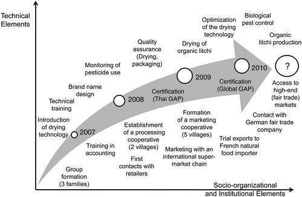

9.1 A Brief History of Participatory Approaches to Research and Development: Global and Southeast Asian Perspectives
9.1.1 Participatory Research and Development
Participatory approaches to agricultural research, natural resource management and rural development have been widely discussed and promoted since the early 1980s (e.g., Chambers 1983, 1994; Ashby 1986; Pretty 1995; Pound et al. 2003).1 These approaches originally emerged as a response to the lengthy and top-down planning processes used in rural development projects and the failure of the transfer-of-technology model which had predominated between the 1960s and early 1980s. Forerunners to these approaches were the ‘forebears’ of Rapid Rural Appraisal (RRA), a method which later evolved into the more ‘democratic’ Participatory Rural Appraisal (PRA) approach, described by Chambers (1994: 953) as “a growing body of approaches and methods [used] to enable local people to share, enhance, and analyze their knowledge of life and conditions, to plan and to act.” RRA and PRA were developed through the merging of several research approaches and techniques, such as participatory action research, agro-ecosystem analysis, applied anthropology and farming systems research (Campbell 2001). Since their appearance in the late 1980s, participatory approaches have become popular in planning and managing conservation-based interventions, with participatory methods and tools incorporated into development manuals and workshops throughout the developing world. In fact, rural development projects today are rarely funded unless they contain a strong component of community involvement in their design, implementation, monitoring and evaluation stages (El-Swaify and Evans 1999). An overview of the development of participatory approaches to research and development is provided in Fig. 9.1.
The objectives of participation in research and development vary significantly among the individuals and organizations that promote it. One faction emphasizes the efficiency argument and sees participation as a means or tool to be used for researchers or development practitioners to achieve better project outcomes; the other faction is primarily concerned with equity and empowerment issues and regards participation as a process of changing power relations between local people and outsiders. These two different schools of thought are also reflected in the selection of definitions related to participatory approaches to research and development presented in Box 9.1. While most practitioners of participatory agricultural research emphasize the more functional role of participation (cf. Hellin et al. 2008), the question of power relations within participatory approaches is also of relevance in research projects, particularly when the research focuses on marginalized groups such as women, ethnic minority groups or the poor, and/or when it addresses wider issues of natural resource management, sustainability and the multi-functionality of agriculture.
The increasing interest in participatory approaches within national and international agricultural research systems has been linked to the limited outreach of conventional, station-based research approaches in more difficult environments. Whereas the Green Revolution, with its focus on technological packages, was successful to a certain degree in high-potential areas, it was almost a complete failure in highly heterogeneous and marginal areas, such as mountainous or rain-fed semi-arid regions.
Several centers under the Consultative Group of International Agricultural Research (CGIAR) were particularly influential in the early years in terms of popularizing participatory approaches to agricultural research and natural resource management. At this time, social scientists played a leading role in the ‘participatory movement’ within the CGIAR (e.g., Fujisaka 1995; Rhoades and Bebbington 1995), and the spread of Farmer Participatory Research (FPR) was primarily due to the commitment shown by individual scientists within the system. From the mid-1990s onwards, participatory research became more institutionalized, albeit not uniformly across and within centers (Fujisaka 1994; Becker 2000). The system-wide initiative ‘Participatory Research and Gender Analysis (PRGA)’ – with the Centro Internacional de Agricultura Tropical (CIAT) in Cali, Colombia acting as a convening center- played a pivotal role in broadening the scope of participatory research within international agricultural research centers (e.g., Probst 2002; Ashby 2003; Pound et al. 2003). Proponents and practitioners of participatory approaches under the CGIAR can now be found across multiple disciplinary fields – including molecular biologists, agronomists, ecologists, animal scientists, engineers, agricultural economists and rural sociologists. Participatory research is gaining further currency through its recognition of local knowledge and its increasing call for inter- and trans-disciplinary research in support of sustainable rural development (Hoffmann et al. 2009b), yet the usefulness of participatory approaches within agricultural research has always been discussed much more critically than has their application to rural development issues. For example, critics have dismissed these approaches for being pseudo-scientific, impressionistic and lacking analytical rigor (e.g., Bentley 1994; El-Swaify and Evans 1999; cf. Neef 2003).
Within the field of development, the critique of participation has adopted a different stance. Development sociologists and political scientists have accused the existing participatory approaches to development, such as PRA and Participatory Poverty Assessment (PPA), of ignoring the complexity of power structures within local communities and of over-estimating the expected benefits of devolving decision-making to lower levels. One group of scholars has warned against a “new tyranny” of participation (the title of a volume edited by Cooke and Kothari 2001), stating that participatory approaches to rural development have often “failed to achieve meaningful social change, largely due to a failure to engage with issues of power and politics” (Hickey and Mohan 2005: 237). Another critique holds that the evolution from RRA to PRA and on to PLA has acted as an unnecessary detour and that the propaganda around PRA has ignored and swept away all meaningful participatory approaches that were developed and practiced prior to the PRA boom (cf. Hoffmann 2000: 273ff.; Hoffmann et al. 2009a: 231ff.).
Box 9.1 Selected Definitions of Participatory Approaches to Research and Development
Participatory research is a collection of approaches that enable participants to develop their own understanding of and control over processes and events being investigated. (Ashby 2003: 10)
We understand ‘participation’ as the involvement of all individuals and groups who are directly and indirectly affected by our research activities […]. In this process, forms and intensity of ‘participation’ can vary according to research topics and different phases of the research program. (Neef et al. 2006: 309)
Participatory development is defined as a process in which people enjoy active and influential participation in all decisions that have an impact on their lives. (BMZ 1999: 2)
Participation in development is “a process through which stakeholders influence and share control over development initiatives and the decisions and resources which affect them.” (World Bank 1996: xi)
9.1.2 The Emergence of Participatory Approaches to Research and Development in the Southeast Asian Uplands
A major landmark in the emergence of participatory approaches within Southeast Asia was the International Conference on Rapid Rural Appraisal (RRA), held in Khon Kaen, Thailand in 1985, at a time when the words ‘participation’ and ‘participatory’ started to enter the RRA vocabulary (KKU 1987; Chambers 1994, 1997). Within mainland Southeast Asia, Thailand has been one country in which participatory approaches have quickly gained popularity in watershed management and integrated rural development projects since the late 1980s, fuelled primarily by a need to develop alternative income opportunities for opium producers. Countries such as Vietnam, Laos and Cambodia on the other hand, embraced participatory approaches relatively late, following economic and political transformations and increasing external interventions. In Vietnam; for instance, participatory approaches emerged at the beginning of the 1990s when the political climate became more favorable under the doi moi (renovation) policies initiated by the Vietnamese government after the late 1980s. After a period in which participatory approaches were only applied within the framework of bilateral and international rural development projects, the Vietnamese government has increasingly promoted participatory approaches within its national programs (Friederichsen 2009; Minh 2010).
In the Philippines and Indonesia, the rapid adoption and spread of participatory approaches has been the result of strong institutional support coming from international NGOs such as the International Institute of Rural Reconstruction (IIRR) in the Philippines, and international research centers such as the Southeast Asian Office of the World Agroforestry Center (ICRAF) in Indonesia. Since the late 1990s, both these countries have instigated large domestic programs aimed at participatory watershed management and research (cf. Rhoades 1999). In the Philippines, ICRAF has played a vital role in promoting the Landcare approach, a movement of farmer-led organizations supported by local government and technical facilitators who share a desire to see sustainable and profitable land use on sloping lands while at the same time conserving the natural resource base (Garrity 1998). However, despite the strong current towards participatory research and a long tradition in establishing links between research and extension, national research organizations in most Southeast Asian countries continue to follow the conventional model of agricultural research in which the objective is simply to develop technologies that can then be transferred to farmers via extension services. The majority of researchers remain reluctant to leave their research stations and involve farmers in the planning, design, implementation and evaluation of on-farm and other research activities. An important reason for this reluctance is the widespread view that research carried out beyond the borders of the research station is ‘non-scientific’, mainly because agro-ecological and other ‘disruptive’ parameters cannot be controlled – a view that is shared by many agricultural scientists in industrialized countries.
Experience from various research projects in Southeast Asia suggests that interaction between farmers and scientists can be fostered through a multitude of approaches (e.g., Neef 2005a). In Vietnam and the Philippines, promising experiences with Farmers’ Field Schools have been gained in the field of Integrated Pest Management and with rice production systems (e.g., van de Fliert et al. 2007). This approach has also been adapted towards improving smallholder livestock systems under the Farmer Livestock School approach in Vietnam (Minh et al. 2010).
In the upland areas of Southeast Asia, participatory research approaches have focused strongly on experiments in soil and water conservation, but the long-term effectiveness of such measures has often been constrained by social, economic, cultural and institutional factors (e.g., Minh 2010; Saint-Macary et al. 2010). As a response to this limited success, new approaches have recently emerged – such as Payments for Environmental Services (PES) – an approach that combines farmer participation and economic incentives. These approaches are discussed in Sect. 9.4.
9.2 Employing Participatory Rural Appraisal (PRA) Tools Within Agricultural and Environmental Research for Upland Development: Potential and Limitations
9.2.1 Introduction
Most proponents of stakeholder participation in research regard participatory approaches both as a philosophy and as a set of tools or methods that can facilitate communication and interaction between scientists and local stakeholders (Chambers 1997; Nagel et al. 2005).2 PRA is probably the most comprehensive set of interactive methods, and a number of handbooks have been written to facilitate the use of these supposedly interactive methods (e.g., Schönhuth and Kievelitz 1994; Bechstedt 2000). In the previous section we examined some of the criticisms aimed at the most popular of these approaches, PRA, which, like its predecessor RRA, has sometimes been dubbed “quick and dirty” (Richards 1985). However, we argue in this chapter that specific methods within the PRA ‘package’ have the potential to enrich conventional quantitative and qualitative methods.
9.2.2 The Use of PRA Tools Within Interdisciplinary Research Contexts in Uplands Areas: Examples from the Uplands Program in Vietnam
In Vietnam, numerous Uplands Program sub-projects have applied PRA tools to a wide variety of research topics. This section summarizes the experiences gained from collaborative work carried out across four such sub-projects for the years 2003 and 2004 (for a detailed discussion, see Friederichsen 2009). The examples given here discuss the use of PRA tools in two natural sciences-oriented research projects (pasture management and aquaculture) and two social sciences projects (common-pool resources and risk management). Table 9.1 provides an overview linking the specific PRA tools used to the topic areas.
Table 9.1
Research specialties, PRA tools and topic areas
Agricultural sciences specialism | PRA tool | Topic (ethnic group of the respondents in brackets) |
|---|---|---|
Pasture management | Village mapping | Land use changes and pasture use (Hmong) |
Matrix: Buffalo feeding | Sources of buffalo fodder (Hmong) | |
Aquaculture | Fish production diagramming | Aquaculture system and problems, fish diseases, minimizing disease damage (Black Thai, Kinh) |
Common pool resources: | Resource flow diagrams | Farm components, comparing respective flows of labor input, cash and nutrients (Black Thai) |
Matrix: Service organizations | Comparison of power relations and impact of different outside agencies (Black Thai) | |
Risk management | Seasonal calendar | Seasonal variations in income, labor, food and water availability (Black Thai) |
Livelihood profiles | Main sources of livelihoods, factors in impoverishment (Kho Mu) | |
Biographies | Major events in wealthy and poor women’s lives (Kho Mu) |
A basic challenge faced by all research projects wanting to access local perspectives in the Vietnamese uplands is the multiplicity of languages spoken by the local population. In Yen Chau; for instance, the Vietnamese and Thai languages are lingua franca, but proficiency in Vietnamese and Thai among Hmong and Kho Mu villagers is limited, particularly among the elderly and female villagers. Importantly, Vietnamese is at the same time the language of officialdom and the one in which PRA sessions are conducted; therefore, the (Vietnamese language) lexicon available for encounters between minority villagers and researchers tends to be framed in terms of government or party categories, reflecting official ideology and policy. This exacerbates the prevalence of normative accounts (‘what ought to be’) and can make accessing positive-descriptive statements (‘what is’) difficult. Therefore, the default use of Vietnamese in PRA exercises tends to silence marginal local groups and amplifies official, ‘politically correct’ statements, particularly with regard to sensitive topic areas such as family planning or forest protection.
Nevertheless, the research team which applied the above mentioned PRA tools found them a useful aid in terms of encouraging and structuring communication with the villagers. In general, PRA tools were used early in the research process and as a complement to the main suite of methods and measurements applied.
9.2.2.1 Openness of PRA Tools and Surprises
PRA tools are of particular value in the exploratory phase of field research, due chiefly to their openness, something which enables researchers to correct misconceptions and enrich the picture held by researchers of the local reality. The following example highlights how a PRA tool can fulfill this promise – if due attention is paid to the process of applying the tool as well its immediate aftermath.
In order to gain an initial insight into the farming system components and dynamics applied in Yen Chau district, the main study area of the Uplands Program, a resource flow diagram was jointly developed by the research team and a small group of male Black Thai farmers. The main elements used in this session were a joint diagramming activity and its immediate aftermath, when the main respondent gave his views on farm innovations. He was happy to discuss the individual components to be found on his farm and their role in terms of income generation and food provision, and their relative demands on labor.
Visualizing this information, the researchers drew a diagram on a large piece of paper and placed it in the middle of the group. In the center of this diagram a card had been placed representing the household, around which other cards were placed depicting the crops grown, plus animals and machines used. In a subsequent step, arrows representing the flows of labor, money, food and nutrients were added to the diagram. After just over an hour, the outline model of the farm had been completed, visualizing a complex and dynamic local system of resource flows. The creation of this visual model generated intense and condensed communication, thereby allowing for the generation of a wealth of qualitative data in a very limited time, that which could then be readily shared among group members.
Contrary to initial assumptions, the diagram included two motors, one of which was used to power a boat and a plow, and the second to run a rice mill and a threshing machine, and renting-out the threshing machine and combustion-powered plow were seen as important contributors to farm income. Some of the most valuable information; however, emerged immediately after the diagramming session had taken place when a respondent stated his desire “to talk about income”. This respondent made a number of points. First, he said that by attending a 3-year agricultural high school program, as well as having done previous work for the extension service, he had gained knowledge which allowed him to apply mineral fertilizers more efficiently than his peers. He also claimed to be fattening his pigs much faster than his peers using purchased fodder concentrates and by feeding different kinds of fodder to pigs of different ages. He added that his poorer peers had asked him for advice, but did not have the money to invest, plus that he kept his pigs out on a stead about 2 km away from the village, in order to avoid disease, which is a major problem with pig rearing. He said he had also tried cultivating potatoes but stopped because there was no market. Other farmers, in contrast, were not growing potatoes because they were not used to eating them. Finally, he claimed that, unlike his peers, he knew how to calculate the costs and returns involved in investments and therefore could repay any subsidized credits that he had taken up in the past.
In this case then, a PRA tool generated a wealth of information about a system of resource flows in a short period of time, plus prepared the way for an animated discussion to take place regarding the differences between ‘poor’ farmers and the clearly elite respondent. By pointing out his above-average level of formal education, his work as a change agent in the extension service, his ability to test an agricultural innovation and his comparative wealth as indicated by his use of motorized tools, he ended up highlighting the contrast between his own success and status and the lot of his poorer fellow villagers. Thereby, the research team gained a valuable insight into innovation dynamics and markers of status which far exceeded the original intention of the diagramming session. However, for this to happen, it was necessary to treat the diagramming session as part of a larger encounter and communicative event, and for this to contribute to the research projects in question, the ‘extra’ information gained had to be documented in detail, followed-up on and verified during later visits to the village.
9.2.2.2 PRA’s Closeness to Development Aid and Villagers’ Expectations
Local people’s previous experiences, together with PRA’s focus on people’s needs and problems, can create specific and sometimes problematic expectations among villagers. Most villages in which the Uplands Program has conducted research have been visited by foreigners on previous occasions, and in some cases residents recall researchers, but most of their memories are of foreign development workers. Accordingly, villagers’ expectations frequently echo the activities of former and specific development projects, such as the provision of credits or investment in a village school or water facilities. In those cases where contact with researchers preceded our own, the reactions of villagers towards us were more specific. For instance, in one case a Kho Mu village headman negotiated with the Uplands Program group the appropriate level of compensation to be paid to a villager in order to guide them to distant fields, by referring to the amount paid by a researcher who had previously worked in the village. In another case, while guiding a social science research group through the village’s territory, a Hmong guide repeatedly voiced interest in fodder grass being planted in the village, referring to the more tangible potential benefits offered by a pasture management project. In a final case, villagers at first supported or at least accepted researchers, but became impatient and irritated after repeatedly granting interviews, to the point of rejecting further research.
These examples illustrate how villagers tend to believe that researchers in principle can and should contribute to their interests through material provision and specific technologies. Research activities in the cases cited were more or less tolerated and accepted; however, the researchers involved often felt they were mistakenly identified as development workers and so felt compelled to clarify at the beginning of the interviews held that they had no funds beyond courtesy gifts to invest in the villages, and that they were there merely to learn about the villagers’ lives or other, specific issues (cf. Neef and Heidhues 2005 for a discussion on how this can affect the setting of research priorities).
9.2.2.3 Gender, Ethnic Culture and Socio-economic Status
The gender, ethnicity, culture and socio-economic status of respondents influence their communication behavior, and notable differences surfaced during our group interviews with the Black Thai women on the subject of risk management. Participants from the two respondent groups (of five persons each) were selected in accordance with the village head’s wealth ranking list; the first included a group of rich women and the second a group of poor women. Whereas the wealthier group participated actively and a very relaxed atmosphere predominated during the interviews and the following meal, the women in the poorer group were very hesitant to engage with the researchers. In both cases, men were present in the houses where the interviews were conducted, joined the group during the interviews and interfered with them. During our interview with the wealthier women, the male host, who had hitherto been sitting passively by the fireplace, passed a note to his wife at one point so that she could read his answer to us. When she could not read everything he had written, he continued answering our questions, but using noticeably longer phrases than the women. During our interview of the poor women, those men who were incidentally present ended up dominating the interview – physically by sitting in front of the women, and verbally – to a degree that virtually silenced them. While it is well known that poor people, and in particular poor women, are less likely to express themselves publicly and verbally due to their subordinate social roles, these examples show that it may not always be practicable for researchers to control who participates in interviews. Following the PRA-instruction, which is to divide respondents into homogenous (that is, single-sex) groups, would; however, impose the researcher’s priorities upon local customs. As a result, the contribution of PRA methods to solving the methodological problem of access to low-status segments of a local society is somewhat limited.
9.2.3 The Limitations and Pitfalls of Applying PRA Tools
Campbell (2001) emphasized the need to meticulously document the processes that lead to the typical ‘physical’ outputs of PRA sessions, such as village maps, diagrams and matrices. Yet many practitioners tend to take these outputs as the final results of a PRA exercise and so do not see the need to carry out further analysis of this ‘data’. To stand the test of scientific validity; however, a thorough documentation of the deliberations that took place, in the local language, is necessary. Many of the visual tools applied in PRA need a high degree of “visual literacy” (ibid: 383) to decode the graphical representations of reality, and it cannot be taken for granted that local people and external researchers and practitioners will have knowledge of these same cognitive concepts. Kothari (2001: 150) stated that designing a seasonal agricultural cycle requires “a clear, visual presentation of what in reality is often a more variable and less easily compartmentalized process”. Our own experience in northern Vietnam and northern Thailand confirms that such visual products as a seasonal calendar tend to mask inequalities within local communities, such as when local elites who occupy land with good access to water are able to transplant paddy rice much earlier than more marginalized farmers who cultivate their plots further downstream. As Henkel and Stirrat (2001: 182) commented, “it is also crucial to recognize that to a large extent PRA already presupposes the frame of what can and cannot be done as it canonizes the kinds of visualizations acceptable”.
Another danger is that PRA methods can become routine instruments, since many communities may have already undergone several such procedures, and the appeal of such methods can decrease drastically when local people are repeatedly invited to participate in them. This can be further aggravated by the tendency among younger, less experienced researchers to use ‘blueprint’ methods and handbook style prescriptions of PRA tools, or for experienced practitioners to just play out their standard repertoire of visualization techniques. Other limitations refer (1) to the ‘illusion of participation’ when reducing a PRA to a purely managerial exercise, (2) to the phenomenon of ‘local political correctness’, as PRAs are always conducted in the public sphere within which underlying conflicts are rarely communicated to outsiders, (3) to the ‘one-shot’ character of PRA workshops, leaving them open to accidental influences, and (4) to the influence of moderators’ agendas and group dynamics. There is also a tendency among many PRA practitioners to take insufficient account of the wider socio-political contexts in which the procedures are embedded. We argue that thoroughly contextualizing participatory research approaches can help to overcome some of the dilemmas of PRA, such as not raising the expectations of participants with regard to immediate development assistance being forthcoming and not over-emphasizing local problems analysis and local solutions.
9.2.4 Concluding Remarks
We conclude that PRA methods are inappropriate as ‘stand-alone’ research techniques, but may be particularly useful when combined with other, conventional research methods, and that such methodical integration can open-up promising research avenues. First, the openness of PRA methods can help gain relatively quick access to the study area, to the socio-cultural context and to local perspectives, particularly for natural scientists and field researchers who only have experience with standard research tools such as questionnaires. Second, PRA methods provide space and flexibility for improvisation and ad hoc corrections of the approach in an exploratory research phase, and third, the interactive character of PRA allows data sharing, face-to-face dialogue and joint interpretations by researchers and local people. Yet, our experience shows that this requires a long-term, intensive and trusting relationship to have developed. Embedded in such a research framework, PRA methods lose their ‘one-shot’ character and can become useful instruments only during structured communications between outsiders and locals, as well as an effective tool for feedback and the validation of preliminary research results.
9.3 Stakeholder Participation in a Priority Setting; The Modeling of Land Use Changes and in Environmental Valuation
This section scrutinizes the potential of involving farmers in priority setting for research and development (Sect. 9.3.1), and discusses the challenges faced by stakeholder participation when modeling land use changes and resource scarcity (Sect. 9.3.2), presenting lessons learned from participatory approaches to environmental valuation carried out in Thailand (Sect. 9.3.3).3
9.3.1 Stakeholder Participation in a Priority Setting for Research and Development: From Simplistic Ranking to Formalized Decision-Support Processes
In the preparation phase of the Uplands Program, simple ranking methods were used to give farmers in selected villages in the Thai and Vietnamese uplands the opportunity to set their own social and economic priorities for the coming 5-year period. This was done by presenting them with various pictures showing a whole range of agricultural and non-agricultural subjects (Neef and Heidhues 2005). Not surprisingly, the results unveiled a significant variation in priorities depending on the socio-economic status, ethnic origin, age and gender of the respondents. Several methodological and conceptual concerns with regard to farmers’ priority-setting, such as difficulties in distinguishing between research and development projects and a tendency to give ‘politically correct’ answers, were considered in the process (cf. Neubert 2000). We also needed to address the potential trade-offs resulting from the demand for scientific excellence on the one hand, and the relevance of the research program for farmers and other local stakeholders on the other (Neef and Heidhues 2005).
A more sophisticated and formalized tool, the Analytical Hierarchy Process (AHP) – as first developed by Saaty (1980) and later widely employed worldwide (e.g., Vaidya and Kumar 2006) – has been applied by Thai researchers from Chiang Mai University in the Thai agriculture/natural resource context. Ekasingh et al. (1996) first introduced AHP to enable groups of farmers to select suitable areas for rice-fish farming. During the first step, the technical, economic and social criteria needed to establish rice-fish farming were obtained from resource persons, after which farmers were solicited to do pairwise comparisons of these criteria within groups. The process resulted in weightings, which were then incorporated into a Geographic Information System that was able to depict suitable land for rice-fish farming. Based on this pilot project, M. Ekasingh and his team developed a Thai software program to deal with the mathematical algorithms, called Ror Tor Sor, which is short for Ruam Tud Sinjai, or ‘joint decision-making’ (Ekasingh et al. 2006). Since the program is in Thai, it enables the active participation of Thai farmers. AHP, in connection with the software program, has been used to make optimal crop choices given different constraints with regard to land endowments and market access (Ekasingh et al. 2007), to engage communities in making rational use of their community funds (Ekasingh et al. 2008) and to choose the most suitable occupations for community members given many social and economic constraints (Ekasingh et al. 2009).
An assessment of AHP found that it is well understood by participants after sufficient explanations have been given by qualified facilitators, and the process can be checked for consistency and – if inconsistencies are found – pairwise comparisons revisited and weighed again, followed by another consistency check. In our study, farmers told the researchers that the AHP is a helpful and robust tool for eliciting judgments in a transparent way and for enabling formal weightings to be assigned in quantitative terms, not just in a descriptive form. The process was found to be engaging, and some sessions took the whole day; participants were satisfied with the results and accepted them because they were engaged in the process from the beginning. Figures 9.2 and 9.3 give examples of the AHP structure and a session held with the farmers respectively.
Fig. 9.2
Structure of an AHP, with criteria and options
Fig. 9.3
Ror Tor Sor sessions with the study farmers
While the results of weighting using the Ror Tor Sor program are more consistent for homogeneous groups with a focus on less controversial topics, the tool can also be used when groups are more heterogeneous and topics are more sensitive, although the consistency of the results will depend on the composition of the groups involved. Provided that the moderator is competent and experienced, the Ror Tor Sor program is able to enhance mutual understanding among heterogeneous groups, and through fostered dialogue a compromise weighting can be achieved. In such cases, there is less emphasis on AHP as a weighting and selecting tool, but rather as a communication tool aimed at reaching compromise among diverse interests.
9.3.2 Stakeholder Participation in Modeling Land Use Changes and Resource Competition
Participatory modeling has been defined as “the process of incorporating stakeholders, often including the public, and decision-makers into an otherwise purely analytic modeling process to support decisions involving complex environmental questions” (Voinov and Brown Gaddis 2008: 197–198). Stakeholder involvement in agent-based modeling and simulation can take various forms: (1) role plays can provide crucial information on behavioral parameters that feed into the model (Barreteau 2003), (2) stakeholders can validate the assumptions or simulation outcomes of the model and help improve it by giving feedback on how realistic the assumptions or outcomes are based on their experience, such as of soft systems validation (e.g., Schreinemachers et al. 2010), (3) stakeholders can be involved as players in a more interactive version of the model in which they set their own rules and can change parameters (e.g., Castella et al. 2005), (4) models can be used as a decision-support tool for stakeholders by exploring alternative scenarios (e.g., Becu et al. 2008, cf. Sect. 9.3.2.2) and quantifying possible consequences of alternative scenarios (e.g., Becu et al. 2003), and (5) models can be employed in a more extractive form in data-scarce environments, as exemplified in the following case study from north-western Vietnam.
9.3.2.1 Building on Qualitative Datasets to Simulate Land Use Change in North-Western Vietnam
This study drew on an integrated approach, using participatory assessment tools and a land use change model, as part of an iterative process to explore the linkage between soil fertility degradation and land use change, covering a case study area in Chieng Khoi Commune, north-west Vietnam (Lippe et al. 2011). The study was conducted under the premise that the epistemic uncertainty inherent in environmental assessments calls for participatory approaches to modeling and science-based research, in order to enhance the opportunity to jointly identify solutions to environmental problems such as soil degradation. It followed the hypothesis that qualitative information derived from a participative environmental assessment approach can serve as an input to parameterize a spatially-explicit land use model (FALLOW, van Noordwijk 2002), and that the combination of local knowledge and a model simulation can generate new insights into the local complexity of land use change.
The employed participatory assessment approach drew on conceptual ideas from the Soft-System-Methodology (Checkland 2000) and on methods used by Participatory Rural Appraisal (Chambers 1994), and was conducted with an interdisciplinary research team. Following an initial reconnaissance survey, focus group discussions were employed to analyze with local stakeholders the land use change dynamics leading to the present village’s upland cropping patterns. Focus group discussions covered topics such as land use history, current cropping systems, and the causes and consequences of current land use systems. Various discussion rounds were organized with in total 32 villagers representing different stakeholder groups, such as administrative organizations and upland farmers. In a preliminary step, the area of interest was defined jointly with the participants, in order to develop a common level of understanding in time for the impending discussion sessions. For this purpose, a portable topographic 3D model (Fig. 9.4) of the study area was created using polystyrene sheets, in which recognizable topographic and land cover features, such as forest areas, hilltops, lakes, rivers and roads, were highlighted using different colors to facilitate participant comprehension.
Fig. 9.4
Portable 3D model (scale 1:10,000) (Prepared by Melvin Lippe (based on: Land use map, 2005: People’s Committee, Yen Chau District)). Dark grey – secondary forests, black – settlements, grey – upland cropping area. Note: White areas are due to loss of color during transportation
Furthermore, to reduce output bias and also to understand different stakeholder’s environmental perceptions and viewpoints, discussions groups were split into younger (18–40 years) and older (41–65 years) as well as male and female groups. In a concluding synthesis discussion, the individual session outputs were presented to participants again, and inconsistent information was revised if necessary by using a feedback loop (Fig. 9.5). Besides the inconsistency check, the second aim of the feedback loop was to acknowledge the apparent occurrence of ‘dominant participants’, those who may have caused biased session outputs, and also the personal bias fed into the discussions by the research team. The feedback loop thus allowed the revision of individual session outputs by all participants, following a similar approach as the AHP approach presented in Sect. 9.3.2.
Fig. 9.5
Causal diagram of the information feedback loop. A–G: Flow of Information – dotted arrows indicate session outputs to E – synthesis discussion, F1 – stakeholders adapt or revise session outputs if necessary, F2 – synthesis discussion outputs are confirmed and compiled as outputs of the focus group discussions (Source: Lippe et al. 2011: 1457)
The session results generated were then used to calibrate the FALLOW (van Noordwijk et al. 2008) land use change model, in which the stakeholder assumptions were further used in a scenario analysis to test different strategies on how to combat locally declining soil fertility patterns. The findings of this scenario highlighted the fact that fertilizer application and hybrid crop varieties were masking the ongoing decline of soil fertility in the case study area; therefore, the findings of the model simulation had a much broader message to convey at the regional level, as many areas in the mountainous parts of northern Vietnam face similar challenges. An apparent limitation of the study was failing to pass on the modeling results to local stakeholders and regional policy makers (the soft systems validation), as the primary aim of the study was to calibrate the employed land use model with qualitative datasets in data-poor environments, considered a novelty by the research team with regard to environmental modeling. However, the study shows that building on an iterative participatory approach to obtain input variables is suitable for semi-quantitative modeling and as a methodological pathway to foster the implementation of sustainable upland cropping practices. The combined approach used here has been shown to be a useful tool due to its open and adaptive research approach in a data-poor environment.
9.3.2.2 Challenges for Stakeholder Involvement in Modeling
Whereas earlier studies involving participatory modeling tended to be over- enthusiastic towards the potential of such approaches (e.g., Barreteau 2003; Castella et al. 2005), several recent studies have drawn more attention to the ethical, social and political challenges, pitfalls and constraints of stakeholder involvement in modeling, particularly in potential conflict situations and in the context of severe power differentials among stakeholders (e.g., Becu et al. 2008; Voinov and Bousquet 2010).
These challenges can be categorized into three, and will be discussed in the following section against the background of the so-called companion modeling process:
- Positionality of the researchers: What role do researchers play throughout the process – from formulating research questions and conceptualizing the model, to initiating communication processes and influencing policy processes?
- Process of stakeholder involvement: How are the various stakeholders selected, in which phases of the research project do they get involved, what role do they play in the process, how can they influence the overall modeling process and how are conflicts among the stakeholders addressed?
- Outcome of the modeling exercise: What are the intended outcomes of the project, what are the implications for stakeholders and how are the results translated into actual negotiation, conflict resolution and policy formulation processes?
Positionality of the Researchers
First and foremost, a distinction must be made between the different roles commonly attributed to researchers as part of a companion modeling (ComMod) process, whether it be project leader/initiator, academic knowledge holder, facilitator, modeler or developer (Barreteau et al. 2011). Some confusion may exist between these roles as, at the outset, the participative modeling project is often initiated by a single person. When these processes are set in motion outside an academic research framework, that is, in settings with their own power structure and institutional partners from outside the academic world, questions concerning the project’s positioning should be addressed. In fact, the positionality of the project holder/leader is also an issue that must be tackled, and the answer to this can be found when assessing what the project adds in value terms when compared to existing interactions between the players, norms/standards and governance processes. The legitimacy of the project will depend on the strength of the relationship that has already been established between the project initiator and the different stakeholders at its inception.
In the Mae La Ngun sub-catchment in northern Thailand, the novel contribution of the modeling approach was the academic support provided in relation to the biophysical processes involved in water sharing (notably hydrological), and its legitimacy was re-enforced when the project was presented to three local power brokers, namely two village leaders and the chairman of the Tambon (sub-district) administrative organization, or TAO (Becu et al. 2008).
The role of the facilitator is both crucial and difficult, as it is directly involved in the communication processes between the different social groups that form the stakeholders for the issue under study (Daré et al. 2011). The role requires practice and an ethical code to be in place (covering; for example, management of speaking time and respect for a diversity of opinions). Sometimes the interactions between stakeholders can take unexpected turns, putting certain participants in uncomfortable situations, particularly when confronted with power asymmetries. At these times, the facilitator and the project leader/initiator, who are the guarantors of the outcomes, may, in respect of the procedural aspects of the process, involve themselves in the internal policy process of the modeling project. Different attitudes can be observed in the management styles of project leaders, ranging from a very strong involvement to a laissez-faire style (Barnaud et al. 2010).
The role of the modeler has an impact on the participatory process during the development phase of the modeling tool, and the opacity and complex technical nature of the modeling process must also be taken into account (Becu et al. 2011). During the participatory modeling process, a model will be built, in most cases based on both empirical knowledge coming from local sources, and knowledge – sometimes defined as “scientific” knowledge – issued from research circles. During this process the researcher is; therefore, in theory, a knowledge-bearer like any other, including the farmer. This can be an uncomfortable position for researchers, as their knowledge is open to direct criticism, which is something they are not familiar with, as they are more used to criticism stemming from peer-reviews. Moreover, they cannot control the outcomes of their research investment in the ComMod process (which is the case for all the process participants) and must make concessions with other participants. Therefore, they are open to the criticism already made by certain parties that participative researchers generate ‘disruptive’ parameters which are harmful to the quality of ‘scientific production’.
In addition, it must be said that in practice the blurring of boundaries between the roles of project leader, facilitator and knowledge holder can generate bias in the knowledge sharing process, which is an integral part of the ComMod process. This occurred in the Mae La Ngun case, where the scientific knowledge resided in the hydrological model which had been developed by the co-facilitator based on data collected by the co-investigators. In other words, in projects such as this, scientific knowledge is sometimes not subject to real discussion and critical review by the partners or is not sufficiently explained, unlike empirical knowledge, and; therefore, does not have the same status as other forms of knowledge. The social and cultural gap that exists between the western researcher and local users in Southeast Asia may reinforce this form of bias (Castella et al. 2007).
Process of Stakeholder Involvement
The selection of the stakeholders involved in a companion modeling exercise depends on (1) the research topic and purpose of the study, (2) the project objectives, linked to the ongoing research and development process in the study area, (3) the role they are expected to play, linked to their participation, and (4) factors related to the institutional framework (Mathevet et al. 2011). Daré et al. (2009) proposed the following shortlist from the different elements that should be taken into account when choosing stakeholders: their knowledge of the research subject, their representativeness or personal role within the social group, their position or institutional mandate, their ability to create ties with other stakeholder groups and their availability and involvement.
The roles stakeholders can play in the process may vary significantly, but may include knowledge holders, fund providers, institutional decision-makers, as well as third parties or intermediaries in negotiations or conflict resolution processes. Depending on the issue to be addressed and the objectives of the project, specific roles will be defined, and this will have a bearing on the choice of stakeholders. For example, if the question or issue to be addressed concerns the functioning of a system, knowledge holders will be more sought after; however, if the issue is more concerned with the establishment of priorities among different prospective scenarios, the participation of institutional stakeholders seems particularly appropriate.
How are conflicts among the stakeholders to be addressed? In most potential conflict situations, resolution efforts involve inviting the stakeholders that are either directly affected by or very closely involved in the conflict to take part in a collaborative conflict resolution process. The objective here is to promote exchange among stakeholders from different role categories, so that they may share their roles through the modeling process. In certain cases, it may be particularly useful to involve another actor or group of actors, who, thanks to their status, their relationship with the others or the information they possess
- Play a third party role, that is, do not act as referees, but as actors who can reformulate the issue to make it less contentious or help find an understanding among the parties (for an example, see Gurung et al. 2006), and
- Shift the boundaries separating the stakeholders and; therefore, reshape the special interest groups in a way that makes their interaction less prone to conflict (for an example, see Etienne et al. 2008).
In the specific case of Mae La Ngun, a third stakeholder (the TAO chairman) worked alongside the two other special interest groups in the companion modeling workshops, but was unable to play the role of a third party in the process, as (1) he was involved in a conflict with one of the parties, and (2) was thus perceived by this party to be taking the side of one of the opposing camps.
Outcome of the Modeling Exercise
The outcomes of a companion modeling exercise are primarily qualitative in nature. The quality of the process, that is, the quality of exchanges among stakeholders, is emphasized more than the generation of quantitative results (ComMod 2009). These exchanges relate to the sharing of knowledge, an improved understanding among actors with different perspectives and interests, and a better consideration of various uncertainties. Nevertheless, this way of expressing results is not always easily understood or integrated by local stakeholders or decision-makers, as they are more used to tangible results which are easier to use, such as cost-benefit analyses, and which help them choose between different planning options. The implementation of a quality control process can help assess the outcomes of a participatory modeling exercise, while ex-post evaluations – as employed in the case study in the Mae La Ngun sub-catchment – can also help researchers better understand how stakeholder modeling may or may not lead to sustained conflict resolution mechanisms in the field of mountain watershed management.
9.3.3 Lessons Learned from Stakeholder Participation in Environmental Valuation in Thailand
In an environmental valuation study carried out in Thailand and using the Contingent Valuation Method (CVM) – a novel form of participation – so-called Citizen Expert Groups (CEGs) were developed and employed to increase the validity of the survey results (cf. Ahlheim et al. 2010 for details). The specific aim was to test the potential of participatory techniques in terms of improving CVM mail surveys (MS), to the extent that they could substitute for conventionally applied but highly expensive face-to-face (F2F) surveys. Apart from incurring much lower costs, MShave the advantage that they give respondents more time to think about the valuation scenario presented to them in the questionnaire and what it is worth to them in monetary terms. However, survey results may not be representative of the whole population, since the response rates for MS are usually rather low – often below 20 %, and responses are systematically biased in the sense that it is mainly those people with a special interest in the presented scenario that return the questionnaires, while others often do not.
The approach taken in Thailand was to employ people randomly selected from the survey population to form an advisory Citizen Expert Group, in which they would function as experts on how normal citizens behave when confronted with the task of filling in and returning questionnaires received through the mail. The specific task of that group was to identify features of the survey design in general, and the questionnaire in particular, those that might prevent people from being interested in the survey, from understanding the questions and the scenario and; thus, from returning the completed questionnaire to the researchers. Consequently, the citizen experts were meant to become active participants in the research process itself and function as project partners from the perspective of the population to which the survey was addressed. This form of active participation can be achieved by organizing a series of such group meetings, involving experts from the very beginning of the survey and questionnaire design right up to, ideally, the final evaluation and interpretation of the results.
In the study CVM survey – an evaluation of improvements in tap water quality in Mae Rim, a suburb of Chiang Mai in northern Thailand and in the downstream area of the Mae Sa watershed – stakeholder participation was tested empirically to see if it could significantly improve the CVM mail survey’s results. Two survey waves were conducted, each containing an MS and an F2F survey, and in which two parallel groups of citizen experts were employed only in the second wave. As expected, in the first wave the return rate was rather low (around 25 %) and the monetary valuation results for the proposed tap water improvement program differed strongly between the MS and F2F methods. After employing the CEGs and adapting the questionnaires according to their suggestions (cf. Ahlheim et al. 2010 for details), a doubling of the return rate, to about 50 %, was achieved. Further, and most importantly, the monetary valuation results were now statistically identical for the MS and F2F surveys. This result shows the strong potential of using active stakeholder participation in the survey and questionnaire design process, if optimally adapted to the specific survey population. As appears from the results of this study, stakeholder participation is of particular value for the design of self-administered surveys like the CVM mail survey. As a prerequisite for functional CEGs; however, it should be mentioned that the group must comprise a sufficiently representative selection of the population to be surveyed, and that group members feel free to express their personal opinions, conditions which were met in Thailand. In other countries; however, such a representative selection of group members and free expression of views may not be possible, leading to a severe limitation in the value of stakeholder participation in environmental valuation surveys.
Environmental valuation – whether done in participatory or conventional ways – can provide a sound basis for Payments for Ecosystem Services (PES), as discussed in the following section.
9.4 Payments for Ecosystem Services (PES): A Tool Used to Engage Smallholders in Preserving Natural Resources in the Southeast Asian Uplands
9.4.1 Payments for Ecosystem Services: Concept and Historical Overview
The concept of rewarding land managers for providing environmental services goes back to the soil conservation programs introduced in the United States following the infamous ‘dust bowl’ period of the mid-1930s, when vast expanses of the country were hit by extended droughts and wind erosion (e.g., Hartmann and Petersen 2005).4 The world’s longest running national PES program is the United States’ Conservation Reserve Program, which provides “technical and financial assistance to eligible farmers and ranchers to address soil, water, and related natural resource concerns on their lands in an environmentally beneficial and cost-effective manner” (USDA 2009). Under individual contracts with the government, farmers agree to adopt environment-friendly agricultural and conservation practices.
In the early 1990s, agri-environmental programs were introduced into the European Union’s Common Agricultural Policy (CAP), with the aim of rewarding farmers who engage in less intensive forms of agriculture and preserve cultural landscapes and agro-ecosystem services for the benefit of society as a whole and of future generations. Under the new CAP system, and as agreed upon by member states in June 2003, direct income payments to farmers – decoupled from agricultural production – are based on compliance with environmental, food safety and animal welfare standards, creating incentives to counteract the deterioration of cultural landscapes and to enhance environmental services provided by land managers (Terwan and van der Weijden 2005; Hartmann and Petersen 2005).
Most PES schemes in the Southeast Asian uplands have been applied at pilot sites and at the individual project level. The Rewarding the Uplands Poor for Environmental Services (RUPES) program initiated by the World Agroforestry Centre (ICRAF); for instance, has launched several pilot PES projects in Southeast Asian and South Asian watersheds (see; for example, Arifin 2006; van Noordwijk and Leimona 2010). However, the largest program among developing and emerging economies is the Sloping Land Conversion Program in China, in which farmers are offered grain and cash payments in order to convert agricultural land into rehabilitation forests and other types of conservation areas (Bennet 2008).
9.4.2 Major Actors and Processes in PES Schemes
Three major actors usually come together within PES schemes (see Fig. 9.6):
Fig. 9.6
Actors and issues involved in Payments for Environmental Services (PES) schemes
1.
The providers or sellers of environmental services – usually local communities or individual resource managers. While they may produce a variety of environmental services through the conservation of forests, biodiversity and soils, through the rehabilitation of watershed functions and the preservation of landscape diversity and integrity, they are usually also consumers of environmental services, e.g., using water for irrigation and household consumption, and collecting wood and non-timber forest products. Not all providers of environmental services may be eligible, able and/or willing to participate in a PES scheme.
2.
The beneficiaries or buyers of environmental services – who may be actors from the private sector (e.g., a hydroelectric or drinking water company), a particular group (e.g., lowland residents who are protected from floods and landslides), the whole society of a country (e.g., citizens enjoying a beautiful landscape) or the global community (e.g., citizens benefitting from the potential of forests to sequester carbon). The awareness and willingness-to-pay of these actors is an essential prerequisite of well-functioning PES schemes.
3.
Intermediaries - these actors are important in bringing the demand and supply side of a PES market together, building trust among providers and buyers of environmental services, and mediating in the case of conflict between two parties. Intermediaries may be national governments, non-governmental organizations (NGOs) or international donors. Intermediary mechanisms include various types of environmental policy, such as carbon taxes or water fees, the monitoring of environmental service provision and the allocation of secure use rights to providers of environmental services. These mechanisms can also play an important role in reducing transaction costs and ensuring the sustainability of a PES system.
Neef and Thomas (2009) determined the following three prerequisites for well-functioning PES schemes in the context of Southeast Asian countries:
- Identification of the PES market: There are three basic components that must be clearly identified before a PES scheme can be established: the specific environmental service(s) involved, the potential buyers of the service and the potential providers of the service.
- PES processes and relationships: Once the PES market components have been identified, key processes and relationships need to be developed with the participation of stakeholders. The nature and magnitude of rewards to be provided must be clearly defined and agreed upon, as should be the rules for deciding under what conditions rewards will be paid or denied.
- Institutional environment of PES: In order for PES markets and associated processes and relationships to develop and function well, there are various prerequisites that relate to the broader institutional environment in which a PES scheme is implemented. Experience has already demonstrated that intermediaries, legal frameworks and property rights are often particularly important (Neef and Thomas 2009).
We explore these prerequisites in the cases of Vietnam and Thailand in the following subsections.
9.4.3 Emerging Payment Schemes for Ecosystem Services in Vietnam
Vietnam still lacks a comprehensive national framework for PES schemes, but has initiated various pilot projects in recent years that can be used as indicators for the potential of such schemes to be introduced on a wider geographical scale.
9.4.3.1 Identification of PES Markets in Vietnam
In Vietnam, private sector demand for environmental services is still low, but the government may soon impose obligatory fees for environmental service provision. In 2008, the Vietnamese Ministry of Agriculture and Rural Development; for instance, started charging hydroelectricity plants, irrigation projects, water supply works and industrial estates for the provision of forest environmental services on a trial basis in Lam Dong province in the Central Highlands and Son La province in the northern mountainous area. In a pilot PES scheme run in Vietnam’s upland province of Thua Thien Hue between 2004 and 2005, researchers gave annual monetary rewards to villagers for them to study the potential adoption of a sustainable forest management regime, one that would contribute to protecting the region’s watersheds. They found that by giving an average payment per household of USD15, a high participation rate among villagers and positive environmental impacts, as expressed by a reduction in erosion and forest product extraction rates, could be achieved (The and Ngoc 2006; Glover 2010).
A major problem in developing markets for environmental services in Vietnam has been the lack of understanding of the concept among policy-makers, the private sector – as potential service buyers, and communities – as ecosystem service providers (Pham et al. 2008). As a consequence, the interest in PES schemes has been mainly concentrated among the international donor community.
9.4.3.2 PES Processes and Relationships
As discussed above, voluntariness is a key feature of PES markets, though some scholars have expressed doubts as to whether the participation of farmers in a broader PES scheme can be truly voluntary in a country like Vietnam, where the government tends to exercise tight control over natural resource use (e.g., Wunder 2005; Pham et al. 2008).
It has been found that transaction costs in pilot PES schemes in Vietnam are relatively high, owing to the very small landholdings and the often rugged terrain, features which make monitoring and payment transfers a difficult task (The and Ngoc 2006). Group certification has been proposed as one solution for such transaction cost problems (Pham et al. 2008); however, the negative experience farmers had with the cooperative period in the 1970s and 1980s has made them reluctant to work together towards a common goal, and has thus reduced the level of collective action taking place, an important prerequisite for environmental conservation at the community level. Collective action has been further undermined by an individualization of forestland, particularly of production forests, which has led to fragmentation of the forests and has made the monitoring of environmental service provision an extremely difficult and expensive task (The and Ngoc 2006).
9.4.3.3 Institutional Environment of PES
Since 1990, the National Assembly of Vietnam has promulgated several laws that have established a legal framework for the management of environment and natural resources. Major laws include the Land Law and its various revisions (1993, 1998, 2000, 2001), the Law on Forest Protection and Development (1991) and its revision draft (2004) and the Law on Environmental Protection (1991). Under the existing forest laws, individual households can obtain the right to control parcels of protection forests against encroachment and are paid a small amount of compensation for this work. In addition, they are allowed to harvest non-timber forest products and dry, dead and diseased trees and – under certain conditions – harvest bamboo and timber through selective logging (The and Ngoc 2006).
Pilot PES schemes in Vietnam’s Son La and Lam Dong provinces have been backed by Decision No 380, which provides general guidance for provincial administrations on how to collect fees from hydropower companies, water companies and tourism businesses, yet fails to provide details on how the income from such fees should be distributed (Pham et al. 2008).
A land allocation and registration program in Vietnam that includes both agricultural and forest land use certificates for individual farm households could – in principle – provides a relatively sound basis for the establishment of PES schemes. Yet, all land officially belongs to the state and there are often overlapping jurisdictions over land, leaving ES providers, including the poor, with few options with respect to their right to trade in environmental services (Pham et al. 2008). In addition, the frequent reallocation of land leads to tenure insecurity and thus reduces the incentives individual farmers have to invest in ecosystem management.
In sum, the institutional environment in Vietnam does not seem conducive to the establishment of viable and voluntary PES systems, beyond some specific local cases such as payments from hydroelectric power companies to villagers settling upstream of big reservoirs.
9.4.4 The Potential of Payments for Ecosystem Services Schemes in Thailand
Although Thailand has been active in developing incentive-based environmental projects, such as under the Kyoto Protocol’s Clean Development Mechanism (CDM), the country has not yet implemented any viable PES scheme at the watershed level. Therefore, we can only discuss the findings of feasibility studies into the potential for and constraints on establishing PES schemes in the future.
9.4.4.1 Identification of the PES Market
Any viable PES market needs first a clear definition of the environmental services to be provided. Major environmental concerns in the watersheds of northern Thailand are related to deforestation, floods, landslides and droughts, so it is likely that under future PES schemes, upland farmers will be presented with a set of measures proposed by state land management authorities, such as building check-dams, establishing forest trees and planting vetiver grass, although scientific evidence for the effectiveness of such measures in providing the desired environmental services has been variable to date.
Second, a PES market can only develop if there is at least one buyer of the environmental services being offered. One research project carried out by the Uplands Program found that urban residents in northern Thailand were willing to pay moderate additional fees for environmental projects in the uplands, those that would improve tap water quality (Ahlheim et al. 2006). Sangkapitux et al. (2009) used choice experiments to elicit upstream and downstream farmers’ willingness to engage in a compensation scheme for environmental services in the Mae Sa watershed in northern Thailand. In this study, data were obtained from 371 farm households in the upstream communities and 151 farm households downstream. Results suggested that downstream farmers in the Mae Sa watershed were willing to contribute on average of around 1 % of their annual income towards improving water resources through changes in upstream land management practices. The age and education level of the household heads in the downstream communities were positively correlated with a willingness to pay for an improvement in water resources, and farm households with high acreages and with rice as their main crop were also more likely to participate in a compensation scheme. The research also showed that having a high proportion of non-farm income negatively affected households’ willingness to pay, which is of major significance for the design of future PES schemes given the decreasing contribution of agriculture to rural people’s incomes in less remote areas (Sangkapitux et al. 2009).
Third, providers/sellers of environmental services need to be able and willing to cooperate in a PES market on a voluntary basis. In the empirical CE study of Sangkapitux et al. (2009), it was found that upstream resource managers in a northern Thai watershed were willing to change their farming systems to more sustainable and environment-friendly practices on parts of their land; for example, by planting grass strips to curb soil erosion and by adopting bio-insecticides and water-saving irrigation techniques, if adequate compensation were provided. An interesting finding of this study was that poorer groups among the upstream resource managers were more likely to engage in compensation schemes for ecological services, because payments would provide a rather secure and regular benefits stream, and that the establishment of such schemes would likely improve their tenure security in this protected watershed area. Willingness to accept compensation for the adoption of environment-friendly practices was also found to be positively influenced by the age and education of the respondents and their previous experiences with on-site soil erosion, water shortages and drought (Sangkapitux et al. 2009). Another study in the Mae Sa watershed by Punyawadee et al. (2010) found that downstream water users showed a marginal willingness to pay an additional 40–90 % of their monthly tap water fees for clean, non-chemical contaminated drinkable water.
9.4.4.2 PES Processes and Relationships
The types and forms of payments or rewards given for the provision of environmental services need to be clearly defined. Sangkapitux and Neef (2006) found that payment schemes have to take into account the complex inter-relationships between land and water tenure security, resource conservation practices and rural livelihoods. Combining rewards in cash and in-kind is often seen as a more attractive reward package than just giving cash payments, particularly in the case of Thailand, where the level of tenure security among most upland farmers is extremely low. Rewards in-kind may not only include the provision of more secure access to natural resources, but also technical training and other forms of human capacity building and community empowerment. When PES rewards are made in-kind; however, it may be more difficult to maintain conditionality, particularly when they are provided as a one-off reward (Ahlheim and Neef 2006). In cases of the allocation of formal resource rights as PES rewards, these rights may need to be attached to certain management practices, for recent studies have found that upland farmers with less secure rights appear to adopt environment-friendly practices primarily to gain a reputation as “conservers of the environment” (Sangkapitux et al. 2009), and may resort to their former resource-mining practices if unconditional land titles are bestowed on them or if specified conditions are not enforced.
Measuring actual control of and access to common-pool resources is crucial in order to identify those groups most vulnerable to resource scarcity, and to determine which communities and stakeholder groups are to be compensated if they need to reduce their water demand and/or invest their time in conserving water resources. Sangkapitux and Neef (2006) assessed water tenure security in upstream and downstream communities in a highland watershed of northern Thailand by developing a locally adapted Water Security Index (WSI), which considered three dimensions, namely: (1) the diversity of available water sources, (2) access to those sources expressed as a percentage of irrigated land, and (3) the risks of conflicts and water scarcity. The findings suggested that water security in upstream communities was actually lower than that of the downstream communities, which is at odds with conventional wisdom which suggests that upstream farmers control water resources at the expense of downstream water users.
A lack of trust between potential buyers and providers of environmental services is probably one of the most significant constraining factors when trying to set up viable PES schemes. Evidence from northern Thailand suggests that trust levels between the potential buyers of environmental services (e.g., water authorities or drinking water companies) and the upstream sellers of environmental services cannot be taken for granted, and may need to be built-up over the course of designing PES schemes (Sangkapitux et al. 2009). If tree planting by rural communities or individual farmers is required under a PES scheme, trust is also needed between local people and the Thai Forest Department, a major problem in the northern Thai hillsides, where farmers who leave their land fallow for more than 3 years to allow trees to regrow, risk losing their land rights to that same department (cf. Neef et al. 2003).
9.4.4.3 Institutional Environment Around PES
Upstream and downstream users in Thai watersheds are mutually dependent upon each other and engage in constant bargaining to overcome the effects of negative environmental externalities. Upstream communities, mostly populated by the socially marginalized Hmong ethnic minority group, cannot afford to extract a greater share of water resources if they want to avoid serious resource conflicts with their downstream peers, who belong to the Thai majority and who have stronger social and political ties with regional and national policy-and decision-makers. Sangkapitux and Neef (2006) found a strong correlation between land and water tenure (in-)security, as upstream communities tend to live in national parks and other protected forest areas without having officially recognized land ownership rights. Findings from this study also indicated that farm households with high water security had a lower tendency to apply soil conservation measures, which emphasizes the need to look at the whole range of environmental services that land managers potentially provide (or consume).
Most studies on PES maintain that credible intermediaries are crucial to facilitate the PES mechanism, and the diversified NGO scene in Thailand could be a major enabling factor for future PES schemes in the uplands. It is widely acknowledged; however, that a legal framework at the national level is needed to provide a sufficiently durable institutional support base for such PES schemes, and such a legal framework does not currently exist in Thailand, where the state continues to be regarded as the major if not sole protector of forest resources in upland areas, and neither individual nor communal rights to resource management in sensitive watershed and forest conservation zones are recognized under official laws (Neef and Thomas 2009). In a recent stakeholder meeting organized in the Mae Sa watershed by a Thai research team working under the NRCT-component of the Uplands Program, it was found that most institutional stakeholders (including representatives of government agencies and state enterprises) supported the PES concept in principle, but cautioned that the centralized national environmental policy framework was not conducive to its practical implementation.
9.4.5 Conclusions: PES Schemes in Southeast Asia Facing an Uphill Struggle
The development of PES schemes has been most successful in countries with supportive legal and regulatory frameworks, secure property rights in terms of land and forests, and a relatively low incidence of rural poverty. Such conditions exist in the United States, most EU countries, Japan and some countries in Latin America, but less so in Southeast Asian countries, which have lagged behind others in terms of the emerging trend for market-based conservation incentives. Most PES schemes in Vietnam have not moved beyond the pilot project phase and small catchment level, and the country still lacks a comprehensive legal framework at the national level. In Thailand, where local communities do not have a strong voice in managing forests and other watershed resources, no viable PES schemes have been developed to date. As well as the existence of an appropriate regulatory framework for PES markets at the national level, the other criteria needed for successful PES schemes are those of voluntariness and conditionality (Wunder 2008). Voluntariness is unlikely to be present in authoritarian regimes, such as those in Vietnam and Lao PDR.
Another important issue is how the poor are affected by PES schemes. Most studies suggest that PES schemes provide only supplemental income to low-income environmental service providers; therefore, it is imperative to regard PES only as part of a wider integrated watershed management strategy which covers environmental conservation and sustaining rural people’s livelihoods. This point leads us to the final section of this chapter.
9.5 Towards Multi-stakeholder Knowledge and Innovation Partnerships in Mountain Research and Development
9.5.1 The Rationale of Multi-stakeholder Partnerships
One of the major challenges for ‘next-generation’ participatory approaches to agricultural research, those aimed at sustainable and productive land use in the multifunctional upland landscapes of Southeast Asia, is how they can manage a collaborative generation of knowledge and innovation systems among increasingly heterogeneous groups of stakeholders in a more effective manner. This challenge is closely linked to the issue of ‘scaling-up’, that is, how to combine the depth of participatory approaches at the micro-scale with the necessary outreach needed to address as many stakeholders as possible and in the wider context of entire watersheds or regions. There is also an increasing level of understanding that innovation development is a multi-dimensional and complex process requiring the integration of different perspectives, knowledge domains and experience from a broad range of actors. Therefore, one of the major objectives of the Uplands Program, and its sub-project on participatory research in the final funding phase, was to analyze the conditions under which long-term, interactive knowledge and innovation partnerships can be fostered.
9.5.2 What Makes Knowledge and Innovation Partnerships Work? The Case of a Litchi Processing and Marketing Network in Mae Sa, Northern Thailand
9.5.2.1 Background
Up to now, the many thousands of small-scale longan, litchi and mango growers in northern Thailand have had little influence on the determination of prices or in terms of adding value to their products.5 More than 50 % of fresh longan in the area is traded via middlemen (local and district assemblers), and only a small fraction is sold by farmers direct to consumers or retailers (Isvilanonda 2007). Contract farming arrangements with big agro-processing companies; for example, for canning, reduce farmers’ marketing risks but at the expense of relatively low prices. Processing and marketing cooperatives are virtually non-existent in the northern Thai highlands, so in a meeting of researchers from various sub-projects, we concluded that our research work should focus on the potential for collective action and the enhancement of social capital among upland farming communities, in order to help them play a more active role in the post-harvest and marketing sector, rather than just being passive suppliers of agricultural raw materials as is the case now (Neef and Heidhues 2008).
9.5.2.2 Methods and Theoretical Framework
The partnership on which this case study is based was developed in an action-research context. Data were derived primarily through dense participation, direct observation, field notes from encounters with producers, processors and marketing agents, semi-structured interviews with key informants, and short reports created from group discussions. The action-research approach enabled us (1) to get a first-hand insight into network building processes, (2) to understand the communication, collaboration and mutual learning processes to be found among the various actors involved, and (3) to get access to tacit and ‘secret’ knowledge, such as product specifications, and price negotiation and profit margin information. Theoretically, our research was grounded in the emerging literature on ‘Strategic Niche Management’ (SNM) (e.g., Kemp et al. 1998; Caniëls and Romijn 2008a). SNM advocates the creation of socio-technical experiments in protected spaces – so-called ‘niches’ – where innovation agents are encouraged to cooperate and exchange information, knowledge and experience, without being subject to immediate market pressure as long as the innovation is still at an experimental stage (Caniëls and Romijn 2008b). The concept of SNM builds on three basic principles, namely (1) network building, (2) experiential learning, and (3) a convergence of expectations, all of which can trigger a successful ‘incubation’ and a subsequent mainstreaming and dissemination of the innovation.
9.5.2.3 Network Formation: New Business Opportunities with a Diverse Set of Actors
In cooperation with Hmong smallholder farmers in the Doi Suthep-Pui National Park and with various local and international organizations involved, scientists from the Uplands Program actively searched for sustainable strategies to address the challenges faced by litchi growers in the northern uplands of Thailand. In a first step, an interdisciplinary group of scientists developed an action-research experiment within a fruit processing facility in the villages of Mae Sa Noi and Mae Sa Mai in 2007. A conventional gas dryer was installed in cooperation with a local manufacturer, and then made available to farmers under technical and economic guidance from the researchers. Workshops on litchi drying, litchi jam making, packaging and accounting were organized for the villagers by lecturers from Chiang Mai University, one of the partner universities of the Uplands Program in Thailand. Various Uplands Program sub-projects contributed to the process by conducting surveys about the taste preferences of Asian and Western consumers with regard to dried litchi, a comparative market study of dried litchi from highland and lowland litchi producers, and an economic assessment of the fruit drying operation. The local drying-oven manufacturer agreed to cooperate with optimizing the dryer. The initial network set-up is depicted in Fig. 9.7.
Fig. 9.7
The litchi processing and marketing network in 2007
In 2007, 90 kg of dried litchi were produced from 1,670 kg of fresh litchi, whereby six households actively participated in the drying activities. In 2008, a processing cooperative comprising villagers from two Hmong villages was established, and more than two thirds of its 32 members were women, who traditionally tend to be marginalized within patriarchal Hmong society. The cooperative produced 70 kg of dried litchi and more than 200 kg of litchi jam in the 2008 season, with more than half the dried litchi traded locally via small retailers and tourist facilities and around 32 kg sold as part of a trial export arrangement to a German development organization, which distributed them as Christmas gifts to their employees. To avoid having to pay import duties, the coordinator of the Uplands Program signed a letter confirming that the shipment was linked to a non-profit research project. Microbiological tests and checks of the moisture content were carried out by colleagues at Chiang Mai University to ensure that the dried litchis were safe to eat.
Production and sales of dried litchis have remained at a relatively low level and have been characterized by annual fluctuations (see Table 9.2), due to competition for labor during the extremely short harvesting season in May/June and low profit margins for sales in the local markets, particularly when the price of fresh litchi is relatively high (Schreinemachers et al. 2010). The Uplands Program; therefore, aimed to explore marketing opportunities abroad and sent samples of dried litchis to a large European food fair in 2008. This promotion led to a number of promising new contacts, the most notable being with a French natural food retailer that later ordered several shipments of both fresh and dried organic litchi.
Table 9.2
Sales of dried litchi from the processing cooperative in Mae Sa Mai/Mae Sa Noi
Year | Quantity (kg) | Major marketing channels |
|---|---|---|
2008/2009 | 98 | Direct marketing, retailers, tourist facilities, trial export to a German Development Expert organization |
2009/2010 | 255 | Retailers, tourist facilities, trial export to a French natural food retailer |
2010/2011 | 75 | Retailers, tourist facilities |
In connection with the enhancement of litchi processing activities in the Doi Suthep-Pui area, fruit growers also expressed their intention to step-up their efforts at marketing fresh litchis as part of a loosely organized producer network. Mediated by researchers from the Uplands Program, the agricultural regional offices provided assistance plus Good Agricultural Practice (GAP) certification for litchi growers in four Hmong villages, starting from 2008.6 German and Thai scientists established contacts with a large European-based hypermarket chain which operates more than 400 branches across Thailand. After a difficult start to the business relationship (see below), many litchi growers sold a considerable share of their fresh fruit via a local Thai cooperative7 (Prathupa) to the hypermarket chain from 2009 onwards (cf. Table 9.3). Prathupa offered prices that were slightly above the wholesale market price.
Table 9.3
Sales of fresh litchi to the hypermarket chain from the village marketing network in the Doi Suthep-Pui area
Year | Quantity (kg) | No. of farmers | No. of villages |
|---|---|---|---|
2009 | 204,243 | 95 | 5 |
2010 | 112,950 | 65 | 4 |
2011 | 59,161 | 42 | 4 |
The decline in sales over the 3 years of the arrangement was due to a variety of factors: (1) total litchi production in the area fluctuated owing to the natural phenomenon of alternate bearing,8 (2) some farmers returned to their previous business partners (i.e., middlemen) in 2010 and 2011, when they were offered better prices, and (3) the success of the first year appears to have made some farmers confident enough to explore their own, new marketing channels. Several litchi growers thus started to engage in direct marketing activities and participated in trade fairs and litchi promotion events.
Prior to the 2009 season, the Uplands Program was contacted by a French natural fruit retailer that had learned of the litchi marketing activities through a European food fair. Since this retailer emphasizes certified organic or at least chemical-free products, Uplands researchers linked it to a small organic litchi grower in another district. This business contact resulted in two shipments of fresh organic litchi and two shipments of dried organic litchi being sent to France during the 2009 season. Since Thai consumers are still reluctant to pay a price premium for organic produce, the litchi grower was able to obtain a threefold farm-gate price as compared to the local market price through this micro-trade arrangement, and by the end of the 2009 season, the knowledge and innovation partnership had developed into a dense network of actors (Fig. 9.8).
Fig. 9.8
The litchi processing and marketing network in 2009
In 2009, the Uplands Program also established contacts with a Thai export company that had long-standing business relationships with European fruit importers. This export company suggested working with a few large orchard owners in the area with the aim of obtaining the Global GAP certification required to carry out exports to European and Middle East countries. After a severe setback in the 2010 season (see below), the company decided to work with an individual, trustworthy farmer from another village during the 2011 season. Litchi fruits in his orchard were wrapped with paper bags to increase fruit quality and to reduce the need to spray high doses of insecticides.9 Monitoring was then carried out jointly by staff from the Thai export company and researchers from the Uplands Program, who also assisted the farmer in grading the litchi fruits after harvesting. For the 350 kg sold to the export company, the farmer received a price premium of 60 % as compared to the next best local marketing alternative.10
Recently, the Uplands Program brokered a business contract with the largest of the European fair trade companies, and after testing products from the litchi cooperative, the company showed interest in developing a new product line for dried litchi. Negotiations for the 2012 season were ongoing during the drafting of this chapter.
9.5.2.4 Experiential Learning: Iterative Learning Processes Marked by Trial and Error
The second principle of the strategic niche management concept is experiential learning, and as part of this, the major actors in the litchi processing and marketing network went through different learning stages in an iterative process marked by trial and error. In the early stages of the network’s formation, Hmong litchi growers adopted several new socio-organizational and technical practices. In the case of fresh litchi marketing through the hypermarket chain, the prospect of gaining higher financial benefits from marketing safe, high-value litchi motivated 25 litchi growers to comply with the GAP guidelines – which support farming practices aimed at satisfying food safety standards by imposing limits on pesticide residues. They therefore organized themselves, coordinated their efforts, modified their agricultural practices and adapted their post-harvest handling techniques, despite the large degree of uncertainty that existed at the time as price offers and the agreement conditions were revealed late, past the peak of the harvesting season in 2009.
In the case of the dried litchi processing and marketing cooperative, the adoption of various technical and institutional innovations in the first 2 years – as depicted in Fig. 9.9 – supported the idea of innovation adoption being a multi-dimensional, iterative learning and action process that involves a series of technical, institutional and socio-organizational innovation components at different stages of the process.

Fig. 9.9
Sequence of progressive innovations in the Mae Sa Noi and Mae Sa Mai litchi processing and marketing cooperative for 2007/2008
Yet the learning process was also marked by failed attempts and setbacks. The processing cooperative experienced a number of difficulties in the early stages, such as technical problems in handling the dryer, while drying experiments using chilies, tomatoes and sweet peppers were discontinued due to a perceived lack of marketing opportunities. Female cooperative members were initially enthusiastic about the production of litchi jam, but found it difficult to ensure product quality and to identify a reliable market.
Eventually, the drying of litchi turned out to be the only promising type of added-value process introduced by the cooperative members, yet the trade of dried litchi via local retailers faced considerable challenges. Legal constraints rendered it impossible for the litchi processing cooperative to apply for a Good Manufacturing Practice (GMP) certificate, which is a prerequisite for marketing the products in local supermarkets. Being members of an ethnic minority group settled in a national park, they do not have officially documented land ownership rights; therefore, the processing facility could not be legally registered, though with support from the Uplands Program and its Thai counterparts, the Hmong villagers repeatedly requested an official letter from the National Park authorities certifying that they have the right to permanently settle in the present location, but to no avail.
Surprisingly, the litchi processing cooperative appeared to face fewer constraints when exporting the dried litchis to European markets. Neither the French natural food retailer that ordered two shipments of dried organic litchi from the cooperative in 2009, nor the fair trade organization in Germany that expressed its interest in importing dried litchi starting from the 2012 season, insisted on having the drying process certified under the Thai GMP scheme, that is, as long as the dried litchi were produced under hygienic conditions and contained no agrochemical residues. This is in sharp contrast with the marketing of fresh litchi; for example, farmers involved in a marketing network with a British-based hypermarket chain via a Thai cooperative learned quickly that the quality standards for their litchi were not as strictly applied as initially claimed by their new business partners. Whereas in the first round of negotiations, GAP certification was mentioned as an absolute prerequisite for supplying fresh litchi to the hypermarket chain, it turned out that non-GAP certified farmers could also sell their litchi through this new marketing channel, particularly if the Thai cooperative could not fulfill the daily quota of litchis from its GAP-certified orchards.
Yet the exporters of fresh litchi in general face much stricter regulations than those governing local value chains. In the 2010 season, a Thai export company worked with a group of farmers in one of the Hmong villages towards obtaining the Global GAP certification needed to enable exports to overseas markets. This first attempt failed when one of the farmers failed to comply with the strict rules on pesticide application, with chemical residues then detected in one shipment at the country of destination. As a consequence, the shipment was rejected by the importing agency, causing both a considerable financial loss to the export company and a loss of belief in the capacity of local farmers to engage in collective efforts to comply with strict food safety standards for fresh fruit exports. ‘Learning the hard way’ was thus an essential component of the learning process for major actors in the network.
9.5.2.5 Convergence of Expectations: Negotiating Trade Terms and Balancing Power Differentials
The convergence of expectations among actors in a network – a third principle of the SNM concept – is closely linked with the principle of experiential learning. Here, various interaction patterns were created within the litchi processing and marketing network aimed at sharing knowledge and experience on market demands and mechanisms, the private companies’ structures and logistics and product specifications, as well as the Hmong farmers’ practices and litchi production and processing systems. These dynamic exchanges required ongoing adjustments of the partners’ roles and of the venture’s objectives and strategies for implementation (Tremblay and Neef 2009). The major expectations of the actors in the network are summarized in Table 9.4.
Table 9.4
Key actors in the litchi processing and marketing network and their expectations
Actor | Type of organization | Major expectations |
|---|---|---|
Hmong fresh litchi marketing network | Inter-village private trading alliance | Higher and more stable prices, and secure market throughout the season for fresh litchi; quick payment after delivery of the produce |
Hmong litchi processing and marketing cooperative | Cooperative on share- holder basis (non- registered) | High and stable prices; extending the sales season through processing; secure market channels, preferably overseas |
British-based hypermarket chain | Private company | Procuring fresh, high-grade litchi with no chemical residues from organized farmers; higher profit margins by eliminating middlemen |
French natural food retailer | Private company | Procuring fresh or ‘slow-dried’ litchi produced under natural, chemical-free conditions from individual growers or farmer groups; supply over an extended period |
Thai export company | Private company | Procuring fresh litchi of export quality (GlobalGAP certified); high profit margin through sales to Europe; long-term business relations with both farmers and EU importers |
German-based fair trade organization | Private company | Procuring dried, safe-to-eat litchi, with specific packaging, for ethical consumers in Europe while paying ‘fair prices’ to organized farmers |
Department of Agriculture, Ministry of Agriculture (Thailand) | Public agency | Training farmers and providing certification for Good Agricultural Practices (GAP) |
The Uplands Program and its Thai partners | Publicly funded research network | Initiating pro-poor innovation processes and building partnerships that can be studied in an action-research context |
Hmong litchi growers and processors were relatively homogeneous as regards to their expectations of the new trade arrangements with the hypermarket chain, Thai exporters and European companies; they wanted to obtain prices higher than those offered by middlemen or at the wholesale market in Chiang Mai, and they expected a timely payment after delivering their produce. Being risk-averse, as smallholder farmers they were interested in having secure market channels over the entire season and in discussing terms of trade prior to the beginning of the harvest, and this risk aversion meant they continued to maintain their economic and social ties with the middlemen.
The expectations of the purchasers of fresh and dried litchi, in contrast, were much more varied, though they all had the common objective of developing long-term business relations. The hypermarket chain did not want to negotiate with individual Hmong farmers, but preferred to operate via a Thai cooperative vendor. By eliminating the middlemen from the value chain and dealing with farmers’ cooperatives, it pursued a twofold strategy: increasing its profit margin and improving its corporate image as “a company that helps smallholder farmers in Thailand”. The company was not very strict with regard to agrochemical use in terms of orchard management, as long as no residues could be found on the fruits. The French natural food retailer, in contrast, had a strong commitment to ‘natural’ or chemical-free production processes, while being more flexible with regard to the business relations, which could be concluded either with individual growers or with groups of farmers, though it preferred to work through intermediary actors, in this case a Thai exporter and the Uplands Program. The German-based fair-trade organization expected to work with farmer groups that adhered to certain social standards rather than with individual producers, and placed somewhat less priority on ecological issues. In contrast to the other private actors in the network, this organization wanted to communicate directly with the local producers, particularly if it decided to engage in a long-term micro-trade arrangement with the Hmong processing and marketing cooperative. Moreover, benefits passing to the community had to be clearly evident to the fair-trader, thus supporting the basic cooperative setting of the processing group.
The Uplands Program, with its various Thai partners, played a key role in mediating between the various actors in the network and in balancing power differentials between large private companies and public agencies on the one side, and loosely organized and traditionally marginalized smallholders on the other. It also facilitated the information diffusion process concerning the various process and product specifications for fresh and dried litchi, as required by the private companies. The initiation of face-to-face negotiations was particularly crucial for a gradual alignment of dissenting expectations between suppliers and purchasers, and in fact, all personal contact between the representatives of the Hmong processing and marketing network and private companies was organized by staff from the Uplands Program.
The central role of the Uplands Program in establishing this complex, multi-stakeholder partnership structure; however, raises questions over the long-term sustainability of the network and the replicability of this approach in other marginal areas of northern Thailand and the wider region, as the trade of local fresh litchi through the hypermarket chain is likely to continue after the withdrawal of the researchers, a fact confirmed in a statement by one of the group leaders at a meeting of the network. Moreover, the success of one farmer in terms of exporting high-quality fresh litchi through the Thai export company in 2011 will probably enhance the motivation levels of other orchard owners who wish to comply with the Global GAP standards and so be eligible for exporting their fresh produce.
9.5.3 Conclusions
Our study of the litchi processing and marketing network in northern Thailand suggests that public investments in agricultural research aimed at sustainable land use and rural development in the mountainous regions of Southeast Asia will need to move from the financing of piecemeal research and technology developments, to building long-term interactive knowledge partnerships and innovation networks that include farmers, scientists, extension services, NGOs, industries and actors in other knowledge domains. Such multi-stakeholder partnerships will need to build on the comparative advantages of each stakeholder group and provide spaces for negotiating research priorities and research processes in a more equitable way, and with the awareness that there are possible trade-offs between the interests of various actors that need to be balanced as part of the process.
Acknowledgments
We would like to thank the Deutsche Forschungsgemeinschaft (DFG) for funding this research project under the Collaborative Research Program entitled ‘Sustainable Land Use and Rural Development in Mountainous Regions of Southeast Asia’ (The Uplands Program – SFB 564). Also the co-funding of the National Research Council of Thailand (NRCT) is acknowledged. We are grateful for the helpful comments of Manfred Zeller and Ulfert Focken, Gary Morrison for reading through the English, and Peter Elstner for helping with the layout. We are particularly indebted to the farmers and other local stakeholders who participated in the project, for their active involvement during the research activities.
Open Access. This chapter is distributed under the terms of the Creative Commons Attribution Non-commercial License, which permits any noncommercial use, distribution, and reproduction in any medium, provided the original author(s) and source are credited.
References
Ahlheim M, Neef A (2006) Payments for environmental services, tenure security and environmental valuation: concepts and policies towards a better environment. Q J Int Agric 45(4):303–318
Ahlheim M, Frör O, Sinphurmsukskul N (2006) Economic valuation of environmental benefits in developing and emerging countries: theoretical considerations and practical evidence from Thailand and the Philippines. Q J Int Agric 45(4):397–419
Ahlheim M, Ekasingh B, Frör O, Kitchaicharoen J, Neef A, Sangkapitux C, Sinphurmsukskul N (2010) Better than their reputation: enhancing the validity of contingent valuation mail survey results through citizen expert groups. J Environ Plan Manage 53(2):163–182CrossRef
Arifin B (2006) Transaction cost analysis of upstream-downstream relations in watershed services: lessons from community-based forestry management in Sumatra, Indonesia. Q J Int Agric 45(4):361–377
Ashby JA (1986) Methodology for participation of small farmers in the design of on-farm trials. Agric Adm 22:1–19
Ashby JA (2003) Introduction: uniting science and participation in the process of innovation – research for development. In: Pound B, Snapp S, McDougall C, Braun A (eds) Managing natural resources for sustainable livelihoods: uniting science and participation. Earthscan, London, pp 1–19
Barnaud C, d’Aquino P, Daré W, Fourage C, Mathevet R (2010) Dispostifs Participatifs et Asymétries de Pouvoir: Expliciter et Interroger les Positionnements. Colloque OPDE (Outils pour Décider Ensemble) “Aide à la Décisionet Gouvernance”, Montpellier
Barreteau O (2003) Our companion modeling approach. J Artif Soc Soc Simul 6(2). http://jasss.soc.surrey.ac.uk/6/2/1.html
Barreteau O, Bousquet F, Etienne M, Souchère V, d’Aquino P (2011) Companion modelling: a method of adaptive and participatory research. In: Etienne M (ed) Companion modelling. A participatory approach to support sustainable development. Quae Editions, Versailles, pp 21–44
Bechstedt H-D (2000) Participatory research and technology development for sustainable land management. IBSRAM training manual. IBSRAM global tool kit series no. 3. IBSRAM, Bangkok
Becker T (2000) Participatory research in the CGIAR. Paper presented at Deutscher Tropentag, University of Hohenheim, Stuttgart, 11–12 Oct 2000
Becu N, Perez P, Walker A, Barreteau O, Le Page C (2003) Agent based simulation of a small catchment water management in northern Thailand: description of the CatchScape model. Ecol Model 170(2–3):319–331CrossRef
Becu N, Neef A, Schreinemachers P, Sangkapitux C (2008) Participatory computer simulation to support collective decision-making: potential and limits of stakeholder involvement. Land Use Policy 25(4):498–509CrossRef
Becu N, Bommel P, Botta A, Le Page C, Perez P (2011) How do participants view the technologies used in companion modelling? In: Etienne M (ed) Companion modelling. A participatory approach to support sustainable development. Quae Editions, Versailles, pp 169–186
Bennet MT (2008) China’s sloping land conversion program: institutional innovation or business as usual? Ecol Econ 65:699–711CrossRef
Bentley JW (1994) Facts, fantasies, and failures of farmer participatory research. Agric Human Values 11:140–150CrossRef
BMZ (1999) Cross-sectoral strategy: participatory development cooperation. Federal Ministry for Economic Cooperation and Development (BMZ), Bonn/Berlin
Campbell JR (2001) Participatory Rural Appraisal as qualitative research: distinguishing methodological issues from participatory claims. Hum Organ 60(4):380–389
Caniëls MCJ, Romijn HA (2008a) Actor networks in strategic niche management: insights from social network theory. Futures 40:613–629CrossRef
Caniëls MCJ, Romijn HA (2008b) Supply chain development: insights from strategic niche management. Learn Organ 15:336–353CrossRef
Castella J-C, Trung TN, Boissau S (2005) Participatory simulation of land-use changes in the northern mountains of Vietnam: the combined use of an agent-based model, a role-playing game, and a geographic information system. Ecol Soc 10(1):27. [online] http://www.ecologyandsociety.org/vol10/iss1/art27/
Castella J-C, Pheng Kam S, Dinh Quang D, Verburg PH, Thai Hoanh C (2007) Combing top-down and bottom-up modelling approaches of land use/cover change to support public policies: application to sustainable management of natural resources in Northern Vietnam. Land Use Policy 24:531–545CrossRef
Chambers R (1983) Rural development: putting the last first. Longman, London
Chambers R (1992) Rural appraisal: rapid, relaxed and participatory. IDS discussion paper no. 311. Institute for Development Studies, University of Sussex
Chambers R (1994) The origins and practice of participatory rural appraisal. World Dev 22(7):953–969CrossRef
Chambers R (1997) Whose reality counts? Putting the first last. Intermediate Technology Publications, London
Checkland P (2000) The emergent properties of SSM in use: a symposium by reflective practitioners. Syst Pract Action Res 13(6):799–882CrossRef
ComMod (2009) La posture d’accompagnement des processus de prise de décision: les références et les questions transdisciplinaires. In: Hervé D, Laloë F (eds) Modélisation de l’Environnement: Entre Natures et Sociétés. Quae Editions, Versailles, pp 71–89
Cooke B, Kothari U (eds) (2001) Participation: the new tyranny? Zed Books, New York/London
Daré W, Ducrot R, Botta A, Etienne M (2009) Repères méthodologiques pour la mise en œuvre d’une démarche de modélisation d’accompagnement. Cardère Editions, Laudun
Daré W, Barnaud C, D’Aquino P, Etienne M, Fourage C, Souchère V (2011) The commodian stance: interpersonal skills and expertise. In: Etienne M (ed) Companion modelling. A participatory approach to support sustainable development. Quae Editions, Versailles, pp 45–67
Ekasingh M, Saipothong P, Chaikup C (1996) Selecting area suitable for rice-fish farming using Geographic Information System. In: Proceedings of 11th national farming systems conference on agricultural systems for farmers, environment and sustainability, Thai, pp 174–185
Ekasingh M, Koawmuangmoon T, Sumhem C (2006) Analytical hierarchy process for decision support system. In: 2006 workshop of the multiple cropping center, Green Lake Resort, Chiang Mai, 22–23 Sept 2006
Ekasingh M, Ekasingh B, Ngamsomsuke K, Thong-Ngam K (2007) Application of analytical hierarchy process by farmers to select pesticide free vegetable. In: 2007 workshop of the multiple cropping center, Chiang Mai
Ekasingh B, Thong-Ngam K, Ngamsomsuke K, Ekasingh M (2008) Collective decision making in finding ways to cope with risk in agriculture in Chiang Mai, Phayao and Lamphun. In: Proceedings of 4th national agricultural systems conference, Chiang Mai, 27–28 May 2008, pp 359–370
Ekasingh B, Rajniyom A, Puntiya P, Jumpawan N, Moonfue J (2009) Use of Ror Tor Sor program in choosing the best agricultural alternatives in Mae Tha Watershed, Lamphun Province. In: Proceedings of 5th national agricultural systems conference, Ubon Rajathani, 2–4 July 2009
El-Swaify S and Evans D with an international group of contributors (1999) Sustaining the global farm – strategic issues, principles and approaches. International Soil Conservation Organization (ISCO) and the Department of Agronomy and Social Science, University of Hawaii at Manao, Honolulu
Etienne M, Bourgeois M, Souchère V (2008) Participatory modelling on fire prevention and urbanisation in southern France: from co-constructing to playing with the model. In: Sànchez-Marrè M, Béjar J, Comas J, Rizzoli A, Guariso G (eds) iEMSs 2008: 4th biennial meeting of international congress on environmental modelling and software: integrating sciences and information technology for environmental assessment and decision making, iEMSs, Barcelona, pp 972–979
Friederichsen R (2009) Opening up knowledge production through participatory research? Agricultural research for Vietnam’s Northern Uplands. Peter Lang, Frankfurt a.M./Berlin/Brussels
Fujisaka S (1994) Will farmer participatory research survive in the International Agricultural Research Centres? International Institute of Environment and Development, London
Fujisaka S (1995) Incorporating farmers’ knowledge in international rice research. In: Warren DM, Slikkerveer LJ, Brokensha D (eds) The cultural dimension of development: indigenous knowledge systems. Intermediate Technology Publications, London, pp 124–139
Garrity DP (1998) Participatory approaches to catchment management: some experiences to build upon. Paper presented at the managing soil erosion consortium assembly, Hanoi, 8–12 June 1998
Glover D (2010) Valuing the environment: economics for a sustainable future. International Development Research Centre, Ottawa
Gurung TR, Bousquet F, Trébuil G (2006) Companion modeling, conflict resolution, and institution building: sharing irrigation water in the Lingmuteychu Watershed, Bhutan. Ecol Soc 11:36. [online] http://www.ecologyandsociety.org/vol11/iss2/art36/
Hartmann J, Petersen L (2005) Marketing environmental services: lessons learned in German development cooperation. In: Merino L, Robson J (eds) Managing the commons: payment for environmental services. CSMSS, The Christensen Fund, Ford Foundation, SEMARNAT, INE, Mexico, pp 20–33
Hellin J, Bellon MR, Badstue L, Dixon J, La Rovere R (2008) Increasing the impacts of participatory research. Exp Agric 44:81–95CrossRef
Henkel H, Stirrat R (2001) Participation as spiritual duty: empowerment as secular subjection. In: Cooke B, Kothari U (eds) Participation: the new tyranny? Zed Books, London/New York, pp 168–184
Hickey S, Mohan G (2004) Towards participation as transformation: critical themes and challenges. In: Hickey S, Mohan G (eds) Participation: from tyranny to transformation? Zed Books, London/New York, pp 3–24
Hickey S, Mohan G (2005) Relocating participation within a radical politics of development. Dev Change 36(2):237–262CrossRef
Hoffmann V (2000) Picture supported communication in Africa: fundamentals, examples and recommendations for appropriate communication processes in rural development programmes in sub-Saharan Africa, 2nd revised edn. Margraf, Weikersheim
Hoffmann V, Christinck A, Lemma M (2009a) Rural extension, vol 2, 3rd edn, Examples and background material. Margraf, Weikersheim
Hoffmann V, Thomas A, Gerber A (eds) (2009b) Transdisziplinäre Umweltforschung, Methodenhandbuch, Kulturlandschaft Band 2. OekomVerlag, Munich
Isvilanonda S (2007) Fresh longan marketing and reference market: a case of longan grown in northern Thailand. In: Heidhues F, Herrmann L, Neef A, Neidhart S, Sruamsiri P, Chau Thu D, Valle Zárate A (eds) Sustainable land use in mountainous regions of Southeast Asia: meeting the challenges of ecological, socio-economic and cultural diversity. Springer, Berlin/Heidelberg/New York/London/Paris/Tokyo, pp 277–286CrossRef
Kemp R, Shot J, Hoogma R (1998) Regime shifts to sustainability through processes of niche formation: the approach of strategic niche management. Technol Anal Strateg Manage 10:175–195CrossRef
KKU (1987) Proceedings of the 1985 international conference on rapid rural appraisal “Rural systems research and farming systems research projects.” Khon Kaen University, Khon Kaen
Kothari U (2001) Power, knowledge and social control in participatory development. In: Cooke B, Kothari U (eds) Participation. The new tyranny? Zed Books, London/New York, pp 139–152
Lippe M, Minh TT, Neef A, Marohn C, Hoffmann V, Hilger T, Cadisch G (2011) Building on qualitative datasets and participatory processes to simulate land use change in a mountain watershed of Northwest Vietnam. Environ Model Software 26(12):1454–1466CrossRef
Mathevet R, Antona M, Barnaud C, Fourage C, Trébuil G, Aubert S (2011) Contexts and dependencies in the ComMod processes. In: Etienne M (ed) Companion modelling. A participatory approach to support sustainable development. Quae Editions, Versailles, pp 97–116
Minh TT (2010) Agricultural innovation systems in Vietnam’s northern mountainous region – six decades shift from a supply-driven to a diversification-oriented system. Margraf, Weikersheim
Minh TT, Larsen CES, Neef A (2010) Challenges to institutionalizing participatory extension: the case of Farmer Livestock Schools in Vietnam. J Agric Educ Ext 16(2):179–194CrossRef
Nagel U, Heidhues F, Horne P, Neef A (2005) Participatory technology development and local knowledge for sustainable land use in Southeast Asia: lessons learned and challenges ahead. In: Neef A (ed) Participatory approaches for sustainable land use in Southeast Asia. White Lotus, Bangkok, pp 359–370
Neef A (2003) For discussion: participatory approaches under scrutiny – will they have a future? Q J Int Agric 42(4):489–497
Neef A (ed) (2005a) Participatory approaches for sustainable land use in Southeast Asia. White Lotus, Bangkok
Neef A (2005b) Participatory approaches and local knowledge for sustainable land use – an introduction. In: Neef A (ed) Participatory approaches for sustainable land use in Southeast Asia. White Lotus, Bangkok, pp 3–32
Neef A, Heidhues F (2005) Getting priorities right – how to balance farmers’ and scientists’ perspectives in participatory agricultural research? In: Neef A (ed) Participatory approaches for sustainable land use in Southeast Asia. White Lotus, Bangkok, pp 99–115
Neef A, Heidhues F (2008) Sustainable rural development in mountainous regions of Southeast Asia: the case of Thailand and Vietnam. Geographische Rundschau (International edn) January 2008, pp 28–33
Neef A, Thomas D (2009) Rewarding the upland poor for saving the commons? Evidence from Southeast Asia. Int J Commons 3(1):1–15
Neef A, Onchan T, Schwarzmeier R (2003) Access to natural resources in Mainland Southeast Asia and implications for sustaining rural livelihoods – the case of Thailand. Q J Int Agric 42(3):329–350
Neef A, Heidhues F, Stahr K, Sruamsiri P (2006) Participatory and integrated research in mountainous regions of Thailand and Vietnam: approaches and lessons learned. J Mt Sci 3(4):305–324CrossRef
Neef A, Mizuno K, Schad I, Williams PM, Rwezimula F (2012) Community-based microtrade in support of small-scale farmers in Thailand and Tanzania. Law Dev Rev 5(1):80–100
Neubert D (2000) A new magic term is not enough. Participatory approaches in agricultural research. Q J Int Agric 39:25–50
Pham TT, Hoang MH, Campbell BM (2008) Pro-poor payments for environmental services: challenges for the government and administrative agencies in Vietnam. Public Adm Dev 28:363–373CrossRef
Pound B, Snapp S, McDougall C, Braun A (eds) (2003) Managing natural resources for sustainable livelihoods: uniting science and participation. Earthscan, London
Pretty JN (1995) Participatory learning for sustainable agriculture. World Dev 23(8):1247–1263CrossRef
Probst K (2002) Participatory monitoring and evaluation: a promising concept in participatory research. Margraf, Weikersheim
Punyawadee V, Sangkapitux C, Konsurin J, Pimpaud N, Sonwit N (2010) Assessment of implicit prices for water resource management of tap water users in the downstream of the Mae Sa watershed, Chiang Mai province. Thammasat Econ J 28(4), pp 1–28 (in Thai)
Rhoades RE (1999) Participatory watershed research and management: where the shadow falls. IIED gatekeeper series no. 81, International Institute of Environment and Development, London
Rhoades RE, Bebbington A (1995) Farmers who experiment: an untapped resource for agricultural research and development. In: Warren DM, Slikkerveer LJ, Brokensha D (eds) The cultural dimension of development: indigenous knowledge systems. Intermediate Technology Publications, London, pp 296–307
Richards P (1985) Indigenous agricultural revolution. Hutchinson, London
Saaty TL (1980) The analytic hierarchy process. McGraw Hill Company, New York
Saint-Macary C, Keil A, Zeller M, Heidhues F, Dung PTM (2010) Land titling policy and the adoption of soil conservation technologies in the uplands of Northern Vietnam. Land Use Policy 27(4):617–627CrossRef
Sangkapitux C, Neef A (2006) Assessing water tenure security and livelihoods of highland people in northern Thailand. Q J Int Agric 45(4):377–396
Sangkapitux C, Neef A, Polkongkaew W, Pramoon N, Nongkiti S, Nanthasen K (2009) Willingness of upstream and downstream resource managers to engage in compensation schemes for environmental services. Int J Commons 3(1):41–63
Schönhuth M, Kievelitz U (1994) Participatory learning approaches: rapid rural appraisal, participatory appraisal. An introductory guide. TZ-Verlagsgesellschaft, Rossdorf
Schreinemachers P, Potchanasin C, Berger T, Roygrong S (2010) Agent-based modeling for ex ante assessment of tree crop innovations: litchis in northern Thailand. Agric Econ 41:519–536CrossRef
Schreinemachers P, Schad I, Tipraqsa P, Makpun-Williams P, Neef A, Riwthong S, Sangchan W, Grovermann C (2012) Can public GAP standards reduce agricultural pesticide use? The case of fruit and vegetable farming in northern Thailand. Agric Hum Values 29(4):519–529
Selener D (1997) Participatory action research and social change. Cornell University, Ithaca
Terwan P, van der Weijden W (2005) CAP reform, rural development and the environment – towards a more effective protection and support of valuable agrarian landscapes. Centre for Agriculture and Environment, Culemborg
The BD, Ngoc HB (2006) Payments for environmental services in Vietnam: assessing an economic approach to sustainable forest management. EEPSEA research report 2006-RR3. http://www.idrc.ca/en/ev-108103-201-1-DO_TOPIC.html. Accessed 11 Nov 2010
Tremblay A-M, Neef A (2009) Collaborative market development as a pro-poor and pro-environmental strategy. Enterp Dev Microfinance 20:220–234CrossRef
USDA (2009) Conservation reserve program. National Resources Conservation Service, United States Department of Agriculture (USDA). [online] http://www.nrcs.usda.gov/programs/crp/. Accessed 13 Nov 2010
Vaidya OS, Kumar S (2006) Analytic hierarchy process: an overview of applications. Eur J Operat Res 169:1–29CrossRef
Van de Fliert E, Dung NT, Henriksen O, Dalsgaard JPT (2007) From collectives to collective decision-making and action: farmer field schools in Vietnam. J Agric Educ Ext 13(3):245–256CrossRef
Van Noordwijk M (2002) Scaling trade-offs between crop productivity, carbon stocks and biodiversity in shifting cultivation landscape mosaics: the FALLOW model. Ecol Model 149:113–126CrossRef
Van Noordwijk M, Leimona B (2010) Principles for fairness and efficiency in enhancing environmental services in Asia: payments, compensation, or co-investment? Ecol Soc 15(4):17. [online] http://www.ecologyandsociety.org/vol15/iss4/art17/
Van Noordwijk M, Suyamto DA, Luisana B, Ekadinata A, Hairiah K (2008) Facilitating agroforestation of landscapes for sustainable benefits: tradeoffs between carbon stocks and local development benefits in Indonesia according to the FALLOW model. Agric Ecosyst Environ 126:98–112CrossRef
Voinov A, Bousquet F (2010) Modelling with stakeholders. Environ Model Software 25:1268–1281CrossRef
Voinov AA, Brown Gaddis EJ (2008) Lessons for successful participatory watershed modeling: a perspective from modeling practitioners. Ecol Model 216(2):197–207CrossRef
World Bank (1996) The World Bank participation sourcebook. World Bank, Washington, DC
Wunder S (2005) Payments for environmental services: some nuts and bolts. CIFOR Occasional Paper No. 42. Center for International Forestry Research (CIFOR), Bogor, Indonesia
Wunder S (2008) Payments for environmental services and the poor: concepts and preliminary evidence. Environ Dev Econ 13:279–297CrossRef
Footnotes
1
This section was written by Andreas Neef, Volker Hoffmann, Nguyen The Dang and Phrek Gypmantasiri and draws partly on Neef (2005b).
3
This section was written by Benchaphun Ekasingh, Nicolas Becu, Melvin Lippe, Georg Cadisch, Oliver Frör, Pepijn Schreinemachers, Franz Heidhues and Andreas Neef.
4
This section was written by Andreas Neef, Chapika Sangkapitux and Varaporn Punyawadee and draws partly on Neef and Thomas (2009).
6
GAP certification is officially required by most supermarket operators in Thailand, although enforcement of the regulations tends to be lax (Schreinemachers et al. 2012).
7
The Thai cooperative was needed as an intermediary for collecting and shipping the fresh litchi, because the Hmong marketing network did not have its own packing facility and could not guarantee a continuous supply of fresh litchi at the desired quantity, on a daily basis, over the whole season.
8
Alternate bearing describes a physiological phenomenon common to some fruit tree species, where a year with a high yield is often followed by a year with a low yield.
9
Litchi wrapping with reusable paper bags was piloted within the inter-village litchi network in 2010 and – after promising results from the first trials – proposed to growers as an environment-friendly innovation. With the support of the Uplands Program, a group of 11 early innovators applied for a grant from a national agency (iTAP) to receive the co-funding needed to purchase 30,000 paper bags.
10
He sold 375 kg to a local high-end supermarket chain that paid 50 baht per kg of high-quality litchi.